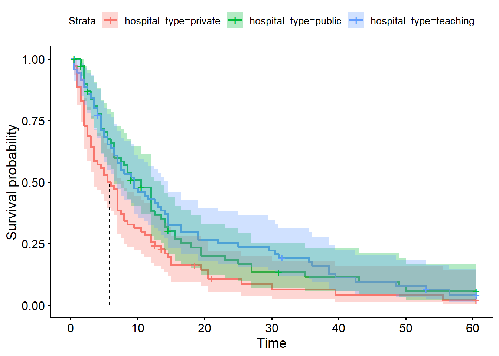
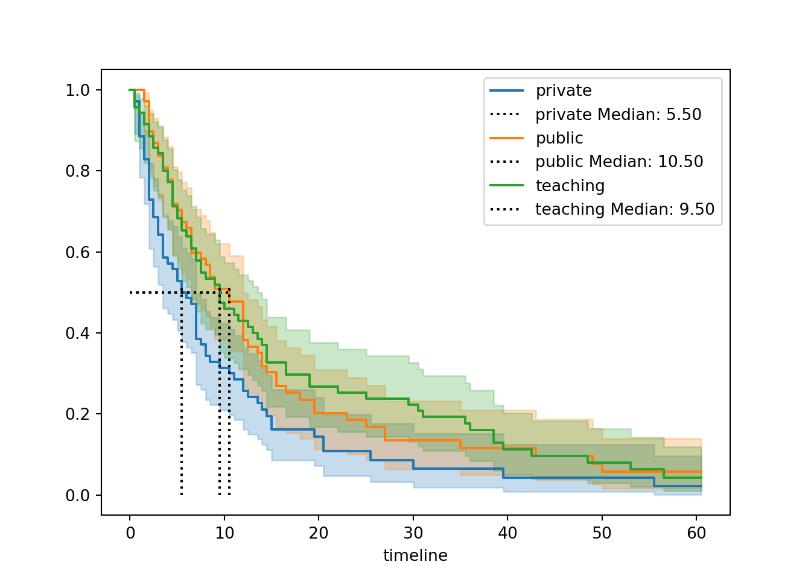

# load the required packages for fitting & visualising
library(tidyverse)
library(survival)
library(survminer)6 Comparing 3+ curves
Sometimes our categorical predictor variable contains three or more levels/categories. If so, here’s how we can adapt the log-rank test to handle that.
6.1 Libraries and functions
NoteClick to expand
import numpy as np
import pandas as pd
from lifelines import *
import matplotlib.pyplot as plt
from lifelines.statistics import multivariate_logrank_test
from lifelines.statistics import pairwise_logrank_test6.2 Visualising 3+ curves
Once again, we’ll use our hospital_stays dataset.
We’re going to focus on a different categorical predictor: hospital_type. There are three categories: public, private and teaching hospitals.
hospital_stays <- read_csv("data/hospital_stays.csv")Rows: 210 Columns: 7
── Column specification ────────────────────────────────────────────────────────
Delimiter: ","
chr (1): hospital_type
dbl (6): time, discharged, age, sex, surgery, weekend_admission
ℹ Use `spec()` to retrieve the full column specification for this data.
ℹ Specify the column types or set `show_col_types = FALSE` to quiet this message.head(hospital_stays)# A tibble: 6 × 7
time discharged age sex surgery weekend_admission hospital_type
<dbl> <dbl> <dbl> <dbl> <dbl> <dbl> <chr>
1 10.5 1 43 1 0 1 public
2 5 1 48 1 0 0 public
3 3 1 77 1 0 1 public
4 4.5 1 50 1 0 0 public
5 60.5 0 79 0 1 1 public
6 9 1 73 0 1 1 public hospital_stays = pd.read_csv("data/hospital_stays.csv")
hospital_stays.head() time discharged age sex surgery weekend_admission hospital_type
0 10.5 1 43 1 0 1 public
1 5.0 1 48 1 0 0 public
2 3.0 1 77 1 0 1 public
3 4.5 1 50 1 0 0 public
4 60.5 0 79 0 1 1 publicCreating stratified survival curves works precisely the same way for three (or more) curves as it did for two:
hosp_type <- survfit(Surv(time, discharged) ~ hospital_type, hospital_stays)
ggsurvplot(hosp_type,
conf.int=TRUE,
surv.median.line = "hv")Warning in geom_segment(aes(x = 0, y = max(y2), xend = max(x1), yend = max(y2)), : All aesthetics have length 1, but the data has 3 rows.
ℹ Please consider using `annotate()` or provide this layer with data containing
a single row.
All aesthetics have length 1, but the data has 3 rows.
ℹ Please consider using `annotate()` or provide this layer with data containing
a single row.
hosp_typeCall: survfit(formula = Surv(time, discharged) ~ hospital_type, data = hospital_stays)
n events median 0.95LCL 0.95UCL
hospital_type=private 70 65 5.75 3.5 8.0
hospital_type=public 70 60 10.50 6.5 13.5
hospital_type=teaching 70 64 9.50 7.0 14.5It’s perfectly valid to construct and save each fitted object one at a time (this is what we did last chapter with two curves).
However, from a coding perspective, it’s more efficient to use a for loop. On each iteration of the loop, we pick the next group in hospital_type, and fit and plot a Kaplan-Meier curve for that group, with a median marker. They are all layered on top of each other on the same plot.
Especially in situations where you’ve got a lot of different groups, this is much more concise!
T = hospital_stays["time"]
E = hospital_stays["discharged"]
# Set up plot
fig, ax = plt.subplots()
kmf = KaplanMeierFitter()
# Loop through each group
for name, grouped_df in hospital_stays.groupby("hospital_type"):
kmf.fit(durations=grouped_df["time"],
event_observed=grouped_df["discharged"],
label=str(name))
kmf.plot_survival_function(ax=ax)
add_median_markers(kmf, colors="k", ax = ax)
plt.show()
On visualisation, it seems that the public and teaching hospitals have quite similar medians, while in the private hospital, there’s a notably shorter expected length of stay.
6.3 Running a log-rank test
It looks like there might be a difference, based on the curves - but is it significant?
Once again, we can make use of the survdiff function, exactly as we did for two curves (it doesn’t matter how many groups we have here!).
survdiff(Surv(time, discharged) ~ hospital_type, hospital_stays)Call:
survdiff(formula = Surv(time, discharged) ~ hospital_type, data = hospital_stays)
N Observed Expected (O-E)^2/E (O-E)^2/V
hospital_type=private 70 65 48.6 5.54 7.88
hospital_type=public 70 60 66.8 0.70 1.13
hospital_type=teaching 70 64 73.6 1.25 2.15
Chisq= 7.9 on 2 degrees of freedom, p= 0.02 We’re going to use the multivariate_log_rank function.
It takes three arguments, which are the three relevant columns of our dataframe: the column of times/durations, the column corresponding to our categorical predictor, and the column that records whether or not the event of interest was observed.
from lifelines.statistics import multivariate_logrank_test
# Run the log-rank test
results = multivariate_logrank_test(hospital_stays["time"], hospital_stays["hospital_type"], hospital_stays["discharged"])
results.print_summary()<lifelines.StatisticalResult: multivariate_logrank_test>
t_0 = -1
null_distribution = chi squared
degrees_of_freedom = 2
test_name = multivariate_logrank_test
---
test_statistic p -log2(p)
7.92 0.02 5.71
CautionWhat does this significant p-value tell us?
If a two-group log-rank test from last chapter is the analogue of a two-sample t-test, then a log-rank test with 3+ groups is the analogue of a one-way ANOVA.
The null hypothesis in our multi-group log-rank test is that all of the different groups have all been drawn from the same underlying population. In other words, in the population as a whole, their survival curves are identical.
This means that our alternative hypothesis is that at least one group is different from the others. But, as with a one-way ANOVA, we might need to follow up with some post hoc testing.
6.3.1 Post hoc testing
If we want to follow up to find out which of the groups are different from each other, then we need to perform pairwise tests (i.e., compare each pair of curves to each other one at a time).
It’s only appropriate to run these post hoc tests if the original log-rank test was significant.
There is a dedicated pairwise_survdiff function for this purpose.
Notice that we have a new argument to specify: the p.adjust.method.
I recommend using either the holm or bonferroni method here, but if you want to be more liberal, you can pick BH (Benjamini-Hochberg) instead.
pairwise_survdiff(Surv(time, discharged) ~ hospital_type, hospital_stays, p.adjust.method = "holm")
Pairwise comparisons using Log-Rank test
data: hospital_stays and hospital_type
private public
public 0.046 -
teaching 0.044 0.815
P value adjustment method: holm The pairwise_logrank_test function works just like the multivariate_logrank_test in terms of its syntax, with the same arguments:
from lifelines.statistics import pairwise_logrank_test
pairwise_results = pairwise_logrank_test(hospital_stays["time"], hospital_stays["hospital_type"], hospital_stays["discharged"])
pairwise_results.print_summary()<lifelines.StatisticalResult: logrank_test>
t_0 = -1
null_distribution = chi squared
degrees_of_freedom = 1
test_name = logrank_test
---
test_statistic p -log2(p)
private public 5.17 0.02 5.44
teaching 5.97 0.01 6.10
public teaching 0.05 0.82 0.29From this post hoc testing, we can see that the teaching and public hospitals don’t seem to differ significantly from one another, but the private school differs significantly from them both.
This implies (in conjunction with the survival curves shown above) that the private hospitals are the “unusual” group, being much quicker to discharge their patients. We can, of course, theorise as to why this might be the case.
6.4 Summary
The log-rank (Mantel-Cox) test can be extended to compare three or more curves.
This is analogous to a one-way ANOVA in regular linear modelling, and tests the null hypothesis that all groups have come from the same underlying population.
TipKey Points
- The null hypothesis of a 3+ group log-rank test is that all groups share the same survival curve in the underlying population
- If the initial log-rank test is significant, pairwise post hoc testing can be performed to identify which group(s) are distinct from one another